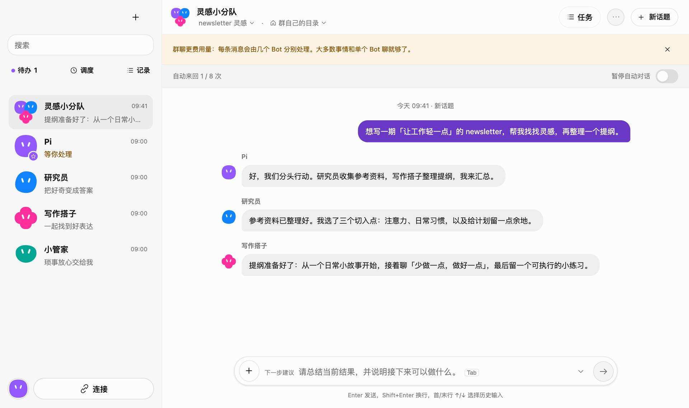
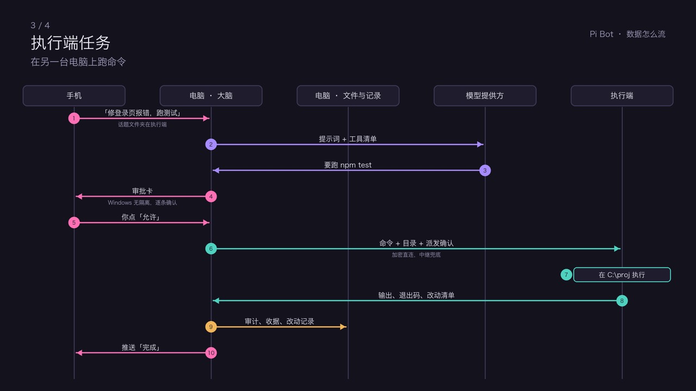
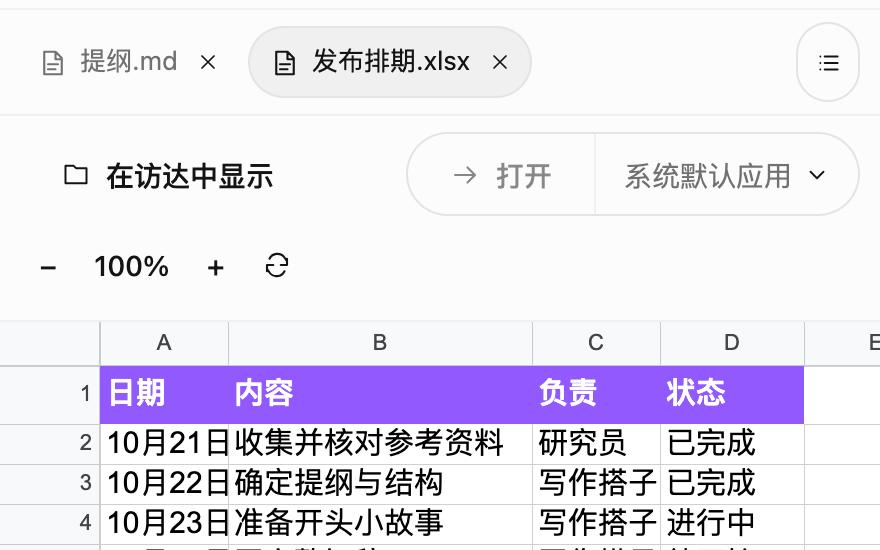
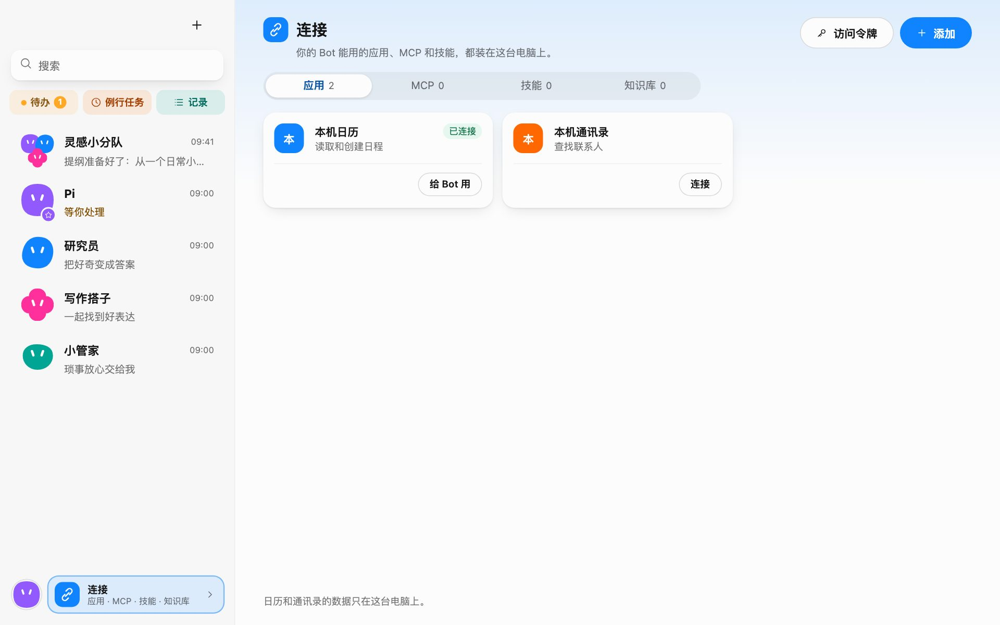
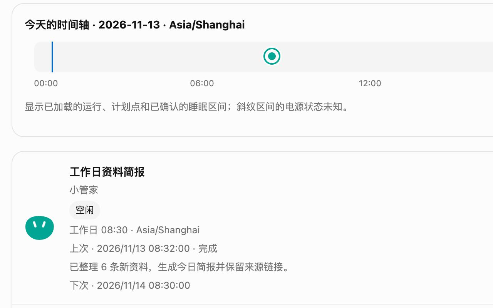
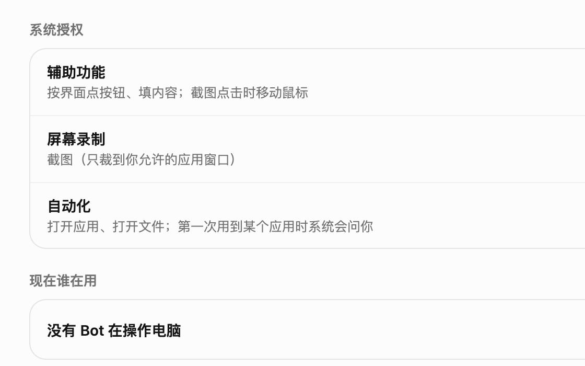

按角色组队
研究、写作、开发、设计……内置角色和群开箱即用。群里先定计划，再分工交接，进度在侧栏看得到。
有名字、有分工的 Bot，在你自己的电脑上干活；
手机发起和批准，另一台电脑也能一起动手。
macOSWindowsLinuxAndroid即将发布

电脑想和管，手机看和批，执行端动手。
设备之间直连、端到端加密，中继只转发密文。

在手机上说一句「把昨天拍的发票整理成报销表」。只有你打开了手机上的「照片」开关，电脑才会读取照片，并先去掉定位信息；表格写在你的电脑上，手机收到通知和预览。照片会发给你选的模型提供方识别，这是数据离开你设备的地方。
在电脑上让 Bot 总结一个文件夹里的 PDF。它只在这个 Bot 的文件夹权限内读取，发给模型的是需要的文字，不是整个文件夹。写入前先经过判定，每一处改动都能撤回。
项目在另一台 Windows 电脑上，你在手机上让 Bot 跑一下测试。每条命令先在电脑上判定，再推到手机由你确认；Windows 上命令没有隔离，所以每条都要确认。执行端只返回输出、退出码和改动清单，不会把整个目录传回来。
这部分还在做。电脑关机或断网时，手机将用同步过来的模型设置直接调用模型，在手机上完成判定和审批；执行端只接受电脑事先签发、24 小时内有效的授权。电脑重新连上后，期间的对话、命令和记录全部同步回去。
直连优先端到端加密中继看不到内容审批和命令有审计改动可撤回内容只发给你选的模型和你允许的服务
每张图都是 App 的实际界面，用的是示例数据。
研究、写作、开发、设计……内置角色和群开箱即用。群里先定计划，再分工交接，进度在侧栏看得到。

Bot 有自己的浏览器，替你查资料、用已保存的账号登录，照做一遍就能学会。密码和令牌只以代号交给模型，原文不经过模型。

读写 Word、Excel、PowerPoint，在侧栏直接预览。每一处改动都可以查看，也可以撤回。

本机日历和通讯录，Notion、Obsidian 知识库，或从这台电脑上的其他 AI 工具导入 MCP 和技能。往外写之前先问你。

按时间，或在文件夹变化时自动开工。错过的、需要你决定的，都集中在「等你处理」。

看屏幕、点按钮、打开应用和文件。你一动鼠标或键盘它就暂停，全局快捷键随时叫停；密码管理、终端这类应用一直不能碰。
对话、记忆和操作记录存在你的电脑上。应用里没有遥测和统计；用云端模型时，相关内容会发给你选的服务商。
文件、命令、操作电脑分别设置，需要时先问你。macOS 和 Linux 上命令在沙箱里运行；Windows 上不做隔离，每条命令都要确认。
YOLO 只对当前对话生效，自动放行也写进操作记录；明确禁止的仍然禁止。改动可以撤回。

Pi Bot 正在为首次发布做准备。开放下载后，本页会提供各平台安装包、版本信息与安装说明。你可以先在本页了解它能做什么。
Pi Bot 的大脑在你的电脑上，对话、记忆和操作记录也存在这里。会离开你设备的，是发给你所选模型服务商的请求内容，以及 Bot 打开网页、使用你连接的应用时与这些服务的往来。用 Ollama 等本地模型时，模型请求也留在本机。电脑、手机和执行端之间端到端加密，走中继时中继只转发密文。
在电脑的「设置 › 手机远控」里配对：手机扫码，执行端填一次性配对码。设备之间优先在局域网里直连，也可以允许打洞；连不通时经中继转发，内容端到端加密。手机上的照片、短信验证码等数据各有开关，由你决定开不开。执行端在 Windows 和 macOS 上是托盘应用，在 Linux 上是命令行，可加 --daemon 在后台运行。
可以和 Bot 私聊：在电脑上为某个 Bot 打开「手机直接用的模型」后，模型设置和密钥会同步到手机，电脑连不上时手机直接调用模型，重新连上后对话同步回电脑。手机在电脑离线时直接指挥执行端，还在开发中。
不会。应用里没有遥测和统计，也不会自动上报崩溃。需要反馈问题时，由你确认后再提交或导出日志，内容不包含聊天、文件和密钥。模型密钥保存在系统提供的安全存储中，不会显示在界面上。服务器上只数两样已经收到的请求：检查更新的次数（按日期、版本和平台）和官方中继的连接次数（按日期和设备类型），不记 IP、不带任何标识，只保存每天的总数。
需要配置你选择的模型服务：OpenAI、Anthropic、Gemini、DeepSeek 等云端服务用你自己的 API Key，或者配置 Ollama 等本地模型。模型费用、账号资格与服务条款由对应服务商决定；本站不会收集你的模型密钥。
可以。你可以配置权限、处理确认请求，查看操作记录。使用 Bot 浏览器时可接管再交还；操作电脑时你一动鼠标或键盘它就暂停，也可以用全局快捷键停止。具体能力会随平台和系统授权有所不同。
不会。YOLO 会自动允许当前对话中原本需要询问的操作，但不会放行你明确禁止的权限或其他硬性限制。新话题默认关闭，不影响例行任务；关闭后恢复询问，不留下永久授权。自动允许会写入操作记录。在 Windows 上，每条命令仍然需要你确认。
电脑端支持 macOS、Windows 和 Linux，手机 App 目前是 Android 版，执行端支持 Windows、macOS 和 Linux。部分能力因平台而异：macOS 和 Linux 上命令在沙箱里运行，Windows 上命令不做隔离、每条都要确认；操作电脑也取决于系统授权和桌面环境。